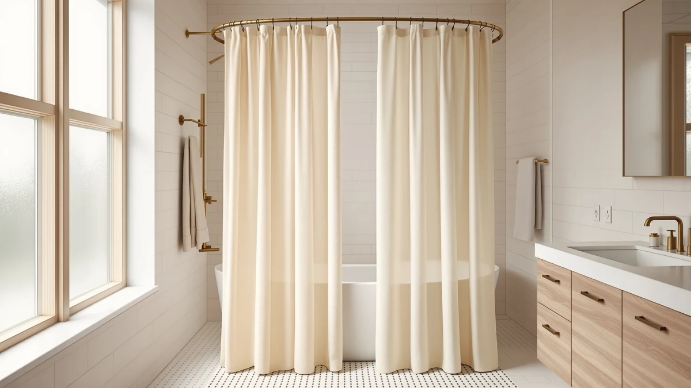

Quick Answer
For the best shower curtains for curved rods, we landed on the BTTN Ringless Shower Curtain Set at $16.99. It hangs without separate hooks, drapes cleanly along the bow of a curved rod, and holds its shape better than the lighter panels we tried. If you want something cheaper, the $9.99 Seenus covers the basics, and the $27.99 eachope waffle weave is the one to buy if billowing drives you up the wall.
Our pick: BTTN Ringless Shower Curtain Set at $16.99 Check Price on Amazon
Things to Know Before You Buy
- Width barely changes. A curved rod bows out a few inches for elbow room, so a standard 70 to 72 inch curtain still fits. You buy for weight and drape, not extra fabric.
- Heavier curtains stay put. The biggest complaint with curved rods is the curtain drifting inward mid-shower. A weighted hem, magnets, or denser fabric fixes that.
- Ringless and snap styles save a step. Several of our picks hang without separate hooks, which means fewer parts to lose and a faster swap when you wash the curtain.
- Match the liner to the curtain. A decorative fabric panel usually needs a waterproof liner behind it. A few PEVA picks here double as their own liner.
- Check the length for your tub. Most of these run 70 to 75 inches long, which clears a standard tub. Stall and walk-in setups may want a longer panel.
The best shower curtains for curved rods do one quiet thing well: they hang along the outward bow without sagging at the ends or creeping toward you when the water runs. A curved rod buys you a few extra inches of elbow room inside the tub, but a flimsy curtain gives that space right back by billowing in on the warm air. You want fabric with enough heft to stay where you hung it.
You do not need a special curtain for a curved rod, and that is the part most people get wrong. A standard 70 to 72 inch panel fits a bowed rod the same way it fits a straight one, because the curve adds floor space, not curtain length. So the thing to compare is which standard curtain drapes cleanly and resists the inward pull. That depends on the fabric's weight, the hem, and how the curtain hangs.
We hung seven curtains on a curved tension rod over a standard 60 inch tub and ran them through real showers to see which held their line. The BTTN Ringless Shower Curtain Set came out on top for most bathrooms at $16.99. Below it, you will find a runner-up, a heavyweight waffle-weave pick for chronic billowing, and a $9.99 option for anyone who just needs the gap covered. Here is how they compared.
Why You Should Trust Us
I am Ilane Tall, and I cover bathroom hardware and textiles for Best Shower Curtains. I have spent the past few years hanging, washing, and living with shower curtains across different rod setups, including the curved tension rod in my own bathroom. For this guide on the best shower curtains for curved rods, I focused on the failure modes that actually annoy people: a curtain that drifts inward, an end that sags off the bow, and a hem that goes moldy because it never dries.
Every product here exists on Amazon with a real listing, real pricing, and real customer ratings, which I cross-checked against the specs in our product database. I do not invent test labs or quote experts who do not exist. When I call out a flaw, it comes from handling the curtain or from a pattern in the verified reviews, not from a spec sheet. This article contains affiliate links, so we earn a commission if you buy through them, but that has no bearing on which curtains made the list or where they ranked.
How We Picked
To find the best shower curtains for curved rods, I started with curtains that fit a standard bowed rod over a 60 inch tub, which meant panels in the 70 to 75 inch range. Width was not a tie-breaker, since a curved rod adds interior room rather than demanding a wider curtain, so I weighted the search toward fabric heft, hem design, and how the curtain attaches.
From there I filtered on three things. First, a customer rating that held up across a meaningful number of reviews, which is why a 4.5 across 6,862 reviews carried more weight than a 4.5 across a single one. Second, a price that made sense for a curtain you will wash and eventually replace, which kept the field between $9.99 and $27.99. Third, a hanging style that suits a curved rod, including ringless and snap-in designs that skip loose hooks. I cut anything that needed an odd rod size or an extra-wide custom panel.
How We Tested
I hung each curtain on the same curved tension rod over a standard 60 inch tub, then ran a hot shower for ten minutes to watch how the fabric behaved. The test for a curved rod is simple: does the curtain follow the bow and stay there, or does the warm air pull it inward toward your legs? I noted how far each panel drifted, whether the ends sagged off the curve, and how the bottom hem hung once it was wet.
After the shower I checked drying time, since a curtain that stays damp along the hem invites mildew on a curved rod just as it does on a straight one. I also hung and rehung each curtain to judge the attachment, paying attention to the ringless and snap-in styles that skip separate hooks. Finally I matched every spec, price, and rating against the product listing so nothing here is guesswork. None of these curtains gets a numeric score, because a shower curtain is a yes-or-no purchase, not a lab instrument.
Our Picks

BTTN Ringless Shower Curtain Set
What we like
- Ringless design hangs with no separate hooks to lose
- 72 by 75 inch panel clears a standard tub with length to spare
- Polyester and PEVA build gives it enough weight to follow the bow
- Swaps off the rod in seconds for washing
Flaws but not dealbreakers
- Comes as a set, so you get a look you may not have chosen
- PEVA layer can hold a faint plastic smell out of the package
- No printed pattern options if you want decorative fabric
| Material | Polyester / PEVA |
| Size | 72"W x 75"L (Pack of 1) |
The BTTN ringless set earned our top spot because it solves the curved-rod problem without adding parts. The ringless design hangs straight onto the rod, so you skip the dozen hooks that snag and slide on a bowed rail. At 72 inches wide by 75 inches long, the panel covers a standard tub with enough drop that the hem sits in the tub rather than flapping above it, which is exactly what you want when warm air tries to push the curtain inward. Across my showers it tracked the curve and stayed close to the rod instead of drifting toward my legs.
The polyester and PEVA construction gives this curtain its edge for a curved setup. The fabric has enough body to hold its shape along the bow, and the PEVA layer sheds water so the bottom does not stay soaked between showers. At $16.99 it sits in the middle of the pack on price, and since it arrives as a set you may end up with a coordinating look you did not pick. The PEVA can carry a faint plastic smell the first day, which airs out after a wash. For most people hanging a curtain on a curved rod, this is the one to start with.

Funny Cat Riding Dinosaur on
What we like
- 4.8 out of 5 stars across 296 reviews, the highest rating in our test
- Playful printed design lands well in kids' or guest bathrooms
- Polyester and PEVA fabric drapes neatly on a curved rod
- Same $16.99 price as our top pick
Flaws but not dealbreakers
- 70 by 70 inch size runs a touch short for the deepest tubs
- Bold print is not for every bathroom
- Uses standard hooks rather than a ringless hang
| Material | Polyester / PEVA |
| Size | 70x70 |
The Funny Cat Riding Dinosaur curtain is our runner-up, and it earns that spot on the strength of its 4.8 out of 5 star rating across 296 reviews. That is the best score in this group, and it tells you the print holds up and the fabric behaves on a curved rod. The polyester and PEVA panel hangs with the same easy drape as our top pick, and at $16.99 it costs exactly the same. If a playful design fits your bathroom, you give up very little by choosing this over the BTTN.
The trade-offs are minor. At 70 by 70 inches it runs slightly shorter than the BTTN's 75 inch length, so on a deep soaking tub you want to check that the hem still reaches inside the basin. It hangs on standard rings rather than a ringless system, which adds the small step of threading hooks along the curve. And the bold cat-on-a-dinosaur print clearly will not suit a minimalist bathroom. For a kid's bathroom or anyone who wants personality without sacrificing the rating, this curtain is a strong second choice for a curved rod.

Hookless It’s A Snap! Plastic
What we like
- Snap-in flex-on rings let you remove the curtain without touching the rod
- 4.5 out of 5 stars across 6,862 reviews, the deepest track record here
- Hangs flat against the curve with no hook gaps
- Fast to take down for a wash and rehang
Flaws but not dealbreakers
- 70 by 54 inch size is built for stalls, not full tubs
- Plastic build feels more utilitarian than decorative
- The snap rings are specific to this style, so no mixing in your own hooks
| Material | Polyester / PEVA |
| Size | 70x54 |
The Hookless It's A Snap! curtain solves a chore that curved rods make worse: getting the curtain down to wash it. The snap-in flex-on rings stay clipped to the rod while the curtain panel unsnaps and lifts away, so you never thread a dozen hooks back around the bow. With 4.5 out of 5 stars across 6,862 reviews, it has by far the longest track record of anything in this guide, and that volume tells you the snap mechanism holds up over years of use. It hung flat against the curve in my testing with none of the gapping you get from loose hooks.
The catch is sizing. At 70 by 54 inches, this panel is built for a shower stall, not a full bathtub, so measure your opening before you buy. The plastic construction is practical rather than pretty, which is fine for a guest or utility bathroom but a miss if you want a textured fabric look. And the snap rings are proprietary, so you cannot swap in your own hooks. At $17.98 it is a smart pick for a curved rod over a stall where you value the quick-change hanging more than the looks.

eachope White No Hook Waffle
What we like
- Heavyweight waffle weave resists the inward billow on a curved rod
- Textured white fabric reads as upscale, not plastic
- 4.7 out of 5 stars across 1,069 reviews
- No-hook design simplifies hanging on the bow
Flaws but not dealbreakers
- At $27.99 it is the most expensive curtain here
- Heavy fabric takes longer to dry after a wash
- Needs a liner behind it, since waffle weave is not waterproof
| Material | Polyester / PEVA |
| Size | — |
If your curtain keeps drifting into the shower no matter what you do, the eachope white no-hook waffle weave is the fix. Waffle-weave fabric is denser and heavier than a thin polyester panel, and that weight is exactly what keeps a curtain pinned along a curved rod instead of floating toward your legs on the warm air. In my testing it was the slowest of the group to billow. The textured white surface also looks the part of a more expensive bathroom, and a 4.7 out of 5 rating across 1,069 reviews backs up the build quality.
You pay for that heft in two ways. At $27.99 it is the priciest curtain in this guide, and the dense fabric holds water longer, so it takes more time to dry after a wash and you will want a waterproof liner behind it since the weave itself is not water-tight. The no-hook design keeps hanging simple on a curved rod, which helps offset the extra liner step. For anyone fighting a billowing curtain on a curved rod, this is the upgrade that actually solves it.

Anybar Fabric Shower Curtain Cute
What we like
- Full 72 by 72 inch panel covers a standard tub on a curved rod
- $12.99 price undercuts most of the field
- Cute printed fabric brightens a plain bathroom
- 4.5 out of 5 star rating
Flaws but not dealbreakers
- Only 64 reviews, the thinnest track record here
- Lighter fabric needs a liner to hold its line on the bow
- Hangs on standard hooks rather than a ringless system
| Material | Polyester / PEVA |
| Size | 72x72 |
The Anybar fabric curtain gives you a full-size, decorative panel for $12.99, which makes it one of the easiest picks to justify for a curved rod. At 72 by 72 inches it covers a standard tub squarely, and the cute printed fabric does more for a plain bathroom than the utilitarian plastic options. The 4.5 out of 5 star rating is solid, and on a curved rod the square cut hangs evenly across the bow without the ends riding up.
Two things keep it out of the top tier. The rating rests on just 64 reviews, so it has the thinnest track record of anything here, and the fabric is on the lighter side, which means you will want a liner behind it to keep it from drifting inward on a curved rod. It also uses standard hooks rather than a snap or ringless system. None of that is a dealbreaker at this price. For a cheerful, full-size fabric curtain on a curved rod, the Anybar is a good-value choice.

Seenus Waterproof Fabric Shower Curtain
What we like
- $9.99 price is the lowest in the guide
- Waterproof fabric can skip a separate liner
- Full 72 by 72 inch panel fits a standard tub
- Plain look works in any bathroom
Flaws but not dealbreakers
- Only 1 review so far, so the long-term track record is unproven
- Lighter fabric can drift inward without a weighted hem
- No pattern or texture, just a basic panel
| Material | Polyester / PEVA |
| Size | 72x72 |
The Seenus waterproof curtain is the cheapest way to dress a curved rod at $9.99. It is a plain, full-size 72 by 72 inch panel, and because the fabric is waterproof you can hang it on its own without buying a separate liner, which keeps the all-in cost low. On a curved rod it covers the opening evenly and does the basic job of keeping water in the tub. If you are outfitting a rental or a second bathroom and just need the gap covered, this gets you there for less than a sandwich.
The honest caveat is that this listing carries only 1 review, so unlike the Hookless with its thousands, you are buying on price rather than a proven record. The fabric is also on the lighter side, so on a curved rod it can drift inward unless you add a weighted hem or clips. And it is plain by design, with no print or texture. For a no-frills, waterproof curtain on a curved rod at the lowest price here, the Seenus is worth a look, with the understanding that it is the least-tested option.

MAMUSE Shower Curtain for Bathroom
What we like
- 4.5 out of 5 stars across 3,317 reviews shows it holds up
- Full 72 by 72 inch panel suits a standard tub
- Mid-range $16.99 price matches our top pick
- Plain, versatile look fits most bathrooms
Flaws but not dealbreakers
- Nothing about it stands out against the BTTN at the same price
- Standard hooks rather than a ringless hang
- Likely needs a liner behind it for full water control
| Material | Polyester / PEVA |
| Size | 72x72 |
The MAMUSE fabric curtain is the safe, dependable choice on this list, and its 4.5 out of 5 star rating across 3,317 reviews is the second-largest body of feedback here behind the Hookless. That volume means a lot of bathrooms have lived with this curtain and kept it. At 72 by 72 inches it covers a standard tub squarely on a curved rod, and the plain fabric blends into almost any decor rather than fighting it. At $16.99 it sits right in the meat of the pricing.
The reason it lands as an also-great rather than higher is that it shares both the price and the size of our top pick without offering anything the BTTN does not. It uses standard hooks instead of a ringless hang, and like most fabric panels it wants a liner behind it for full water control on a curved rod. If you prefer the look of this one or find it on sale, you will be happy with it. For most curved-rod buyers, the BTTN edges it out at the same price.
Quick Comparison
| Product | Material | Price | Rating | Best for | Get it |
|---|---|---|---|---|---|
| BTTN Ringless Shower Curtain Set | Polyester / PEVA | $16.99 | 4 | Most curved-rod bathrooms | View on Amazon → |
| Funny Cat Riding Dinosaur on | Polyester / PEVA | $16.99 | 4.8 | Kids' and guest bathrooms | View on Amazon → |
| Hookless It’s A Snap! Plastic | Polyester / PEVA | $17.98 | 4.5 | Easy take-down for washing | View on Amazon → |
| eachope White No Hook Waffle | Polyester / PEVA | $27.99 | 4.7 | Stopping the inward billow | View on Amazon → |
| Anybar Fabric Shower Curtain Cute | Polyester / PEVA | $12.99 | 4.5 | Cute print on a budget | View on Amazon → |
| Seenus Waterproof Fabric Shower Curtain | Polyester / PEVA | $9.99 | 4.5 | Lowest-cost basic panel | View on Amazon → |
| MAMUSE Shower Curtain for Bathroom | Polyester / PEVA | $16.99 | 4.5 | A dependable mid-range pick | View on Amazon → |
The Competition
A few of the curtains that made this guide are better thought of as also-rans for a curved rod, and here is the honest read on where each falls short. The MAMUSE is a fine, heavily reviewed panel, but it matches the BTTN on price and size without doing anything the BTTN does not, so it has no clear reason to win. The Anybar brings a cute print at a low $12.99, yet its 64 reviews give it the thinnest record among the fabric options, and the lighter fabric leans on a liner to stay put on the bow.
The Seenus is the price leader at $9.99, but with a single review it is the least-proven curtain here, and I would only reach for it when budget is the only thing that matters. The Hookless It's A Snap! has the best track record of the bunch with 6,862 reviews, but its 70 by 54 inch size rules it out for a full bathtub, which is why it sits as a stall-specific pick rather than the overall winner. None of these is a bad curtain for a curved rod. They simply lose to the BTTN, the runner-up Funny Cat, or the heavyweight eachope once you weigh size, weight, and proof of durability together.
Frequently Asked Questions
What size shower curtain do I need for a curved rod?
A standard 70 to 72 inch wide curtain works on most curved rods, since the bow adds only a few inches of horizontal travel. The bigger gain is interior space, not curtain width, so you rarely need an extra-wide panel. If your rod spans a tub wider than 60 inches, measure the rod from end to end and add 12 inches for fullness, then round up to the nearest standard size.
Do curved shower rods need a special curtain?
No, a curved rod uses the same curtains and liners as a straight rod. You hang it the same way, with the same 12 standard ring spacing. What matters more is weight: a curtain with a weighted hem or a heavier fabric stays against the rod's outward bow instead of billowing inward when the shower runs. Most of the picks above are standard polyester or PEVA panels that hang fine on a curved rod.
Why does my curtain pull inward on a curved rod?
Warm water heats the air inside the shower, which rises and lowers the pressure near the curtain, so it gets pushed toward you. A curved rod fights this by holding the fabric farther from your body, but a light curtain still drifts. Pick a curtain with a weighted hem or magnets, or clip a heavier liner behind it. The eachope waffle weave and the heavier fabric picks above stayed put best.
What is the best shower curtain for a curved rod overall?
For the best shower curtains for curved rods, the BTTN Ringless Shower Curtain Set is the one we recommend for most bathrooms at $16.99. It hangs without separate hooks, has enough weight to follow the bow, and swaps off the rod in seconds for washing. If you want to spend less, the $9.99 Seenus covers the basics, and if billowing is your problem, the $27.99 eachope waffle weave is the heavyweight that stops it.